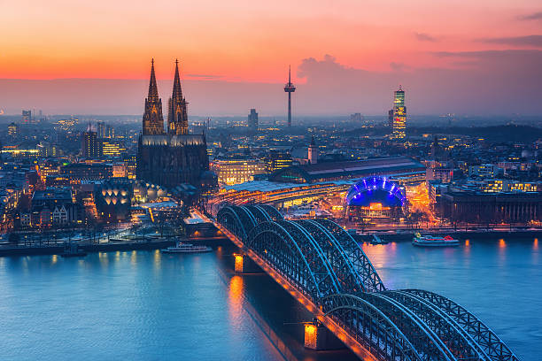
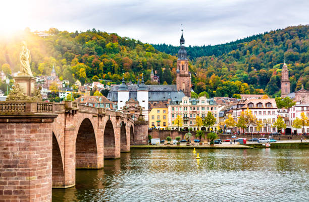

About Germany
Germany, situated in the heart of Europe, is a country of rich history, diverse culture, and modern achievements. Its landscapes range from rolling countryside to bustling metropolises, offering a wide array of experiences for residents and visitors alike.
One of Germany's most iconic landmarks is the Brandenburg Gate in Berlin. This neoclassical monument, erected in the 18th century, holds deep historical significance as a symbol of unity and freedom. It has witnessed pivotal moments in German history, from the division to the reunification of the country.
Germany's commitment to innovation shines through institutions such as the Deutsches Museum in Munich, one of the world's oldest and largest science and technology museums. With interactive exhibits spanning various fields, the museum showcases Germany's significant contributions to scientific progress throughout history.
Nature enthusiasts can find tranquility in the Black Forest (Schwarzwald), known for its dense woodlands, rolling hills, and charming villages. Beyond its natural beauty, the Black Forest is celebrated for its cuckoo clocks, traditional craftsmanship, and the indulgent Black Forest cake.
Germany's unique blend of historical importance, cultural richness, and modern advancements make it an enticing destination. Whether exploring historical sites, savoring diverse cuisines, or enjoying a thriving arts and music scene, Germany has something to offer every traveler.
Popular Destinations
Berlin
Berlin, the capital city of Germany, is a dynamic metropolis known for its history, culture, and vibrant atmosphere. Explore iconic landmarks such as the Brandenburg Gate, the Berlin Wall, and the Reichstag building. Immerse yourself in world-class museums, diverse neighborhoods, and a thriving arts scene.

Munich
Munich, located in Bavaria, offers a blend of tradition and modernity. Experience the Oktoberfest festivities, visit historic sites like Nymphenburg Palace, and enjoy the city's renowned beer gardens and culinary scene.

Neuschwanstein Castle
Neuschwanstein Castle, nestled in the Bavarian Alps, is a fairy-tale castle that inspired Disney's Sleeping Beauty Castle. Explore its stunning architecture, picturesque surroundings, and take in breathtaking views from the nearby Marienbrücke bridge.

The Black Forest
The Black Forest region is known for its dense forests, charming villages, and cuckoo clocks. Discover traditional craftsmanship, indulge in local cuisine, and enjoy outdoor activities such as hiking and skiing.

Cologne
Cologne is famous for its iconic Cologne Cathedral (Kölner Dom) and its vibrant cultural scene. Explore the city's historic Old Town, visit the Museum Ludwig for modern art, and enjoy a stroll along the Rhine River.

Heidelberg
Heidelberg is a picturesque town known for its romantic atmosphere and historic charm. Visit Heidelberg Castle, stroll along the Old Bridge (Alte Brücke), and explore the town's quaint streets and university campus.

Hamburg
Hamburg is a bustling port city with a rich maritime history. Discover the historic Speicherstadt district, explore the vibrant Reeperbahn nightlife area, and take a boat tour along the Elbe River.
Frankfurt
Frankfurt is a global financial hub with a mix of modern skyscrapers and historic architecture. Explore the Old Town (Altstadt), visit the Städel Museum, and take a walk along the River Main.
The Rhine Valley
The Rhine Valley is known for its stunning vineyard landscapes, medieval castles, and charming towns. Take a river cruise, visit towns like Rüdesheim, and enjoy the region's wine culture.

Activities in Germany
Germany offers a wide range of captivating activities that cater to various interests and preferences. Whether you're a history enthusiast, a nature lover, an art aficionado, or a culinary explorer, there's something for everyone to discover:
Cultural Treasures
Germany boasts a rich cultural heritage with its historical landmarks, museums, and vibrant arts scene. From the iconic Brandenburg Gate in Berlin to the charming medieval villages along the Romantic Road, you'll find a mix of old-world charm and modern creativity. German music, literature, and cinema have also left an indelible mark on global culture.

Outdoor Adventures
The German landscape is diverse and perfect for outdoor enthusiasts. The Bavarian Alps offer opportunities for hiking, skiing, and mountaineering, while the Black Forest is a haven for nature lovers. You can cycle along scenic routes like the Mosel Wine Trail or explore the stunning lakes, such as Lake Constance and Chiemsee.

Gastronomic Delights
German cuisine is a treat for the taste buds. Indulge in hearty dishes like bratwurst, schnitzel, and sauerkraut. Don't miss the chance to savor delicious bread, pretzels, and a variety of local cheeses. German beer and wine culture are also renowned worldwide, with numerous beer gardens and vineyards to explore.

Art and Architecture
Germany's architectural marvels and art scene are a testament to its history and creativity. Visit iconic structures like Cologne Cathedral and Neuschwanstein Castle. Explore art museums like the Museum Island in Berlin or the Pinakothek in Munich, housing an impressive array of classical and contemporary artworks.

Wellness and Relaxation
Germany offers a range of wellness experiences, including spa retreats and thermal baths. The historic town of Baden-Baden is renowned for its luxurious spa culture. You can unwind in natural hot springs, saunas, and serene landscapes that promote relaxation and rejuvenation.

Festivals and Celebrations
Experience the lively atmosphere of German festivals and events. Join the world-famous Oktoberfest in Munich for traditional music, food, and beer. Explore the magical Christmas markets during the holiday season, where you can enjoy festive treats and unique crafts.

Whether you're seeking cultural immersion, outdoor escapades, or simply a delightful time, Germany offers a plethora of activities that will create unforgettable memories.
Resources for Visiting Germany
Planning a trip to Germany? Here are some useful resources and tips to ensure your journey is enjoyable and memorable:
Travel Guides
Explore travel guides that provide insights into Germany's top attractions, cultural experiences, transportation options, and more. Websites like Rick Steves, Lonely Planet, and TripAdvisor offer valuable information for travelers seeking to make the most of their trip.
Language
While many Germans speak English, learning a few basic German phrases can enhance your experience and show respect for the local culture. Language learning apps like Duolingo or Babbel can help you learn common greetings and expressions.
Transportation
Get acquainted with Germany's efficient transportation system, including trains, buses, and trams. The Deutsche Bahn website is a great resource for planning train journeys. Consider getting a rail pass for convenient and cost-effective travel between cities.
Accommodation
Choose from a wide range of accommodations, including luxury hotels, charming bed and breakfasts, and modern hostels. Booking platforms like Booking.com, Expedia, and Airbnb offer diverse options to match your preferences and budget.
Currency and Payments
The official currency of Germany is the Euro (EUR). Credit and debit cards are widely accepted, but it's a good idea to carry some cash for smaller purchases and places that might not accept cards.
Local Cuisine
Indulge in Germany's diverse culinary scene, which includes traditional dishes like bratwurst, schnitzel, and sauerkraut. Don't miss the chance to explore local bakeries and try delicious pastries. Visit beer gardens for an authentic taste of German culture.
Safety and Health
Germany is generally safe for travelers, but it's always recommended to be aware of your surroundings. Make sure you have travel insurance that covers medical expenses, and carry any necessary medications with you. If you plan to drive, be aware of the traffic rules.
Cultural Etiquette
Respect local customs and etiquette, such as greeting with a firm handshake and using "Bitte" (please) and "Danke" (thank you) in interactions. Be punctual, especially for appointments and reservations. Learn about local customs and traditions, and be mindful of them, especially in rural areas.
Sightseeing and Activities
Discover Germany's rich history and culture by visiting iconic landmarks like the Brandenburg Gate, Neuschwanstein Castle, and the Cologne Cathedral. Explore museums, art galleries, and enjoy outdoor activities like hiking in the Black Forest or biking along the Rhine River.
Prior to your journey, check the latest travel advisories and entry requirements for Germany. By utilizing these resources and preparing ahead, you can have a wonderful and immersive experience in this fascinating country.